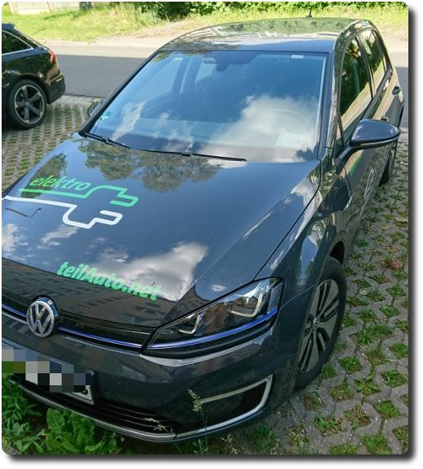

Erste Fahrt mit einem Elektroauto
Am vergangenen Wochenende waren wir zu einer Hochzeit eingeladen, au√üerdem stand seit langem ein Besuch bei unseren Verwandten an. Freude, Freude, denn so konnte ich endlich mal ein Elektroauto von Flinkster ausleihen - wir nahmen den e-Golf. Schnelles Fazit: sehr geil, es macht riesigen Spa√ü, lautlos zu beschleunigen und durch die Stra√üen zu rollen. Als Erg√§nzung zum Zug ist das e-Auto eine super Sache. Und Car-Sharing ist es sowieso. üëçüòä
Das Abholen und Abgeben des Wagens funktioniert sehr einfach: Wagen mit der Flinkster-Karte entsperren, Schlüssel aus dem Handschuhfach entnehmen, Kofferraum entriegeln, Ladekabel ziehen und im Kofferraum verstauen, losfahren. Bei der Abgabe des Wagens muss man wieder an die selbe Ladesäule fahren und das Kabel am Auto und der Säule einstecken. Dann geht man zum Ladeterminal (die blau-gelbe Säule) und hält, nachdem man seine Ladesäule ausgewählt hat, die im Auto ausgelegte Ladekarte (mit RFID-Chip) an das Lesefeld. Dann startet das Laden des Akkus - man erkennt es an einer grünen Status-LED an der Säule und am Auto.
Etwas gewöhnen musste ich mich zunächst noch an das Automatikgetriebe - brrr. Bin bisher nur manuell gefahren. Aber das ging relativ schnell. Als Reichweite beim Start wurden 189km angezeigt. Mehr als genug für unsere geplanten Fahrten. So konnten wir auch die Klimaanlage verwenden, was die km gleich auf 150km drückte.
Sehr einfach kann man beim e-Golf zwischen drei Fahr-Modi wählen: Normal, Eco und Eco+. (Durch Betätigen des Knopfes "Modus" neben dem Schalthebel). Während beim ersten Modus die Beschleunigung sehr straff ist, wird sie bei den anderen beiden gedrosselt und bei Eco+ wird die Höchstgeschwindigkeit auf 95km/h gestellt. Dies erhöht die Reichweite des Wagens mit einer Akkuladung.